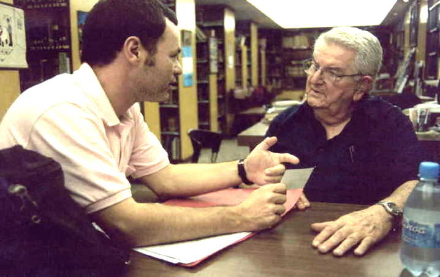
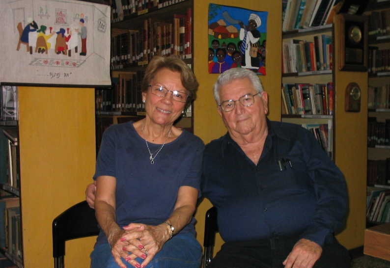

| Dr. Jose Miller
- The Strength of the Community
In my preparations for writing an article on Dr. Jose Miller, president of the Joint Coordinating Committee (J.C.C.) and thereby leader of the Jewish community in Cuba as well as President of La Casa de la Comunidad Hebrea de Cuba and the Beit Shalom synagogue, I spent many hours watching his movements and actions around the Patronato, Havana's Jewish Community Center. Dr. Miller's reputation had come to me in many forms, and I wanted to observe the man myself before interviewing him. He had been described to me in several terms, many of them contradictory, all of them interesting. "He is a strong leader," I was told. "He has kept the community together, through its darkest and most difficult times." "He cares for
everyone," someone else told me. "He will take the time to speak to
anyone coming in, he meets all the groups that visit, he spends his
spare time at the Patronato making sure things are going well." "His knowledge of Cuba's Jewish community is immense," says another. "Just ask him anything you want, and he will know something about it." "He may not have time for you," another person told me. "He is very busy and if he does not think what you are doing is important you may not be able to speak with him." This last comment proved untrue. After a week or so of hanging around the Patronato I told Dr. Miller I would like an "entrevista," an interview, and that I would get a translator so we could do it in Spanish. He agreed to this and we set a time several days away. The day came and I knew that events would probably interfere, and that the interview might get put off for hours or days or even a week or so. But on that day, as I waited outside watching Havana's traffic flowing on Linea and the streets near the synagogue, Miller came out the door and said "Let's go." There was no translator available, and we did the interview in English, in which Miller is fluent. We went upstairs to the main sanctuary, where I took a few photos, then Miller sat in one of the empty seats and we began our conversation. For the next two hours the talk would range over many topics, including the necessary adaptations of Judaism made by the Cubans to ensure the survival of the religion in that country, why Miller stayed in Cuba when ninety percent of the Jewish population left, the Russian presence, the loosening restrictions on all religions in 1991, and other subjects. Miller's range of knowledge is great, as I was told. I started with a question I thought I knew the answer to, but was wrong. "When was the most difficult time for Cuban Judaism?" I asked, expecting to be told that it was in 1959 when the Jewish population was around 15,000 and quickly diminished to around 1,500. "No, that's not it," says Miller. "Those were hard times but not the worst. The worst came in 1938 and 1939 when the Nazis spent a lot of money here trying to create anti-Semitism in Cuba. Those were dangerous times for us. But it did not work. Cuba did not become anti-Semitic, and even today you can see that it is not." This lack of anti-Semitism in Cuba is observed by many, although official support for Israel is lacking from the government. Miller smiles as he discusses this. "I will never say one word against Israel to please anyone," he says. "I will discuss this only with Jews."  And then he says, in a remark which is profound in the complex environment in which he lives, "You cannot oblige me to think like you." This adherence to principles, even in difficult times, has enabled Dr. Miller to help keep Judaism alive and vital in Cuba. "We were not able to get a minyan for services," he says. "So we had to decide. Should we not have services, or should we include women? We included women, we were able to get a minyan, and we had services." Miller also approaches the concept of Jewish identity with flexibility. "It is not necessary to have a Jewish mother to be considered Jewish in our congregation," says Miller. "If somewhere in your family there is someone who was Jewish, an uncle, a grandparent, we will consider you Jewish." This open attitude is supported by recent studies which indicate a large proportion of Cuba's population has Jewish roots. (See the related article from the Miami Herald.) It has also helped rebuild the Jewish population by not keeping to a strict Orthodox interpretation of who is Jewish and who is not. Our conversation has moved outside and Miller takes time to discuss the cleaning of the synagogue's marble steps. There is a detailed discussion with the workman as to what methods will be used, and what cleaners are appropriate. After all the details are agree upon, we move downstairs to the library, where it is cooler. I asked Miller how he would describe the congregation's affiliation. "We are more Conservative," he says. "We cannot be Reform or Orthodox, because most of our members prefer the conservative services. And I don't need tefillin to remind myself that I am a Jew, even though when I saw a photo of Julius Rosenberg buried with tallit, I was impressed by that photo." The complexities of being Jewish in Cuba are made more complicated by other factors. "Marx hating being Jewish," says Miller. "He was the Jewish grandson of a rabbi and hated it. And for this reason I cannot be a Marxist." "The revolution in Cuba was not against Judaism," he continues. "Economically the Jewish community was strong, but then businesses disappeared, and there was no economic future for businessmen. So the sooner they left the better. But I never thought about leaving. I had four children here, and I stayed." Dr. Miller, whose parents came from Lithuania, is a medical school graduate in dentistry, with 30 years of private practice. After 1960, with the proliferation of firearms in the country, Miller says there were many accidents, so he developed a specialty in reconstructive surgery, particularly reconstructive surgery of the face. He worked in both the general and military hospital, and in 1972 became head of his specialty in Havana's largest hospital, where he worked for 22 years. He is uncomfortable with being described as the "Patriarch" of Cuba's Jewish community, or as "Father" of the community. "I don't talk about me," Miller says, and I found this to be true, that he was more comfortable talking about his community than talking about himself. "Talk about what we were, and are now. " "When the community started rebuilding," he says, "reality was distant from Jewish traditions. When the Joint Distribution Committee (JDC) came to Cuba, conservative rabbis came to draw guidelines, to make us more kosher." Miller gives great credit to the JDC in helping to rebuild, but also says, "We have appreciated the help of the Americans, Canadians and others who have helped us in our efforts to draw closer to our Jewish heritage ." After the Russians departed, Miller believes that Cuba had to change. "Castro had to change," he says, "and he had to adapt to survive. He invited in people like Milton Friedman to give economic advice. It was a time of rebuilding, for the country as well as for our Jewish community."  Our conversation is interrupted again by several people, including the JDC's Nestor Szewach, who has some Passover arrangements to discuss, and Miller's wife Dahlia, who also works at the Patronato and has an urgent call for Miller from Argentina. When he has finished with his phone call, Miller looks at me and says, "Dahlia is my second wife (photo at right). My first wife, who is William's grandmother (William Miller is the head of the Patronato's ORT program) died, and I later married Dahlia. She was not Jewish, and converted. I have two children from my first marriage, a daughter in Florida, a son in Israel. My son in Israel wanted to be officially Jewish by Israeli law, and was converted by an Orthodox Sephardic rabbi." In 1993 Miller had a heart attack and was treated in Fairfax, Virginia. In 2001 he had a recurrence of the symptoms. "How are you now?" I ask. "I'm taking care of myself," he replies. "I'm eating better and being more careful about my health." In the three weeks I was in Cuba I spent many hours observing Dr. Jose Miller and his activities. Whether he was speaking to an individual, or to a family at a Bar Mitzvah, or to a group of visiting synagogue members from another country, or just responding to the community's needs, he exhibited a strong commitment to Judaism. In a country which has lost 90 percent of its Jewish population to other countries, and in which the practice of religion was discouraged for decades, only strong leadership could keep the religion viable and thriving. Dr. Jose Miller has met the challenges of revitalizing Judaism in Cuba, and remains one of the main strengths of Cuba's Jewish community. Article by Richard
Smith |